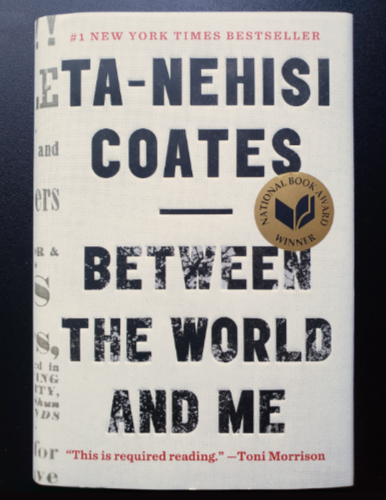

And one morning while in the woods I stumbled
suddenly upon the thing,
Stumbled upon it in a grassy clearing guarded by scaly
oaks and elms
And the sooty details of the scene rose, thrusting themselves between the world and me....
For this theme I was inspired by the book cover for Between the World and Me by Ta-Nehisi Coates (2015), designed by Caroline Cunningham. The text intrigued me in particular. Upon closer examination it revealed a photo of a tree's silhouette in the text cut-out. I thought it would be interesting to reproduce this design for the responsive web, as the image under the text will shift as the text flows to fit the screen width.
 For the title and author’s name I chose Oswald in bold. For the body text I used Bitter. I created a simple halftone pattern for the background, and I was able to find a leaflet likely used in the book cover design for the gutters along the outside of the layout (this outer gutter image may not appear on smaller screens). The leaflet is from Boston, dated 1851, and it was used to warn Black people of slave catchers and kidnappers in the area.
In this book, Coates' examines his life as a Black man in a country steeped in white supremacy, and he examines his own life in the context of the history of racism in the U.S. in the style of a letter addressed to his young Black son. The title of this work is derived from the Richard Wright poem "Between the World Me," from his collection, White Man Listen! (1957). The poem is a chilling account of lynching. As with the poem that inspired Coates, Between the World and Me is one of many works by Black Americans illuminating the horrors and tragedy of historical and systemic racism, while also celebrating the culture and resilience of the Black diaspora.
In large part, public education in the U.S. has ignored Black history and experience. As a white woman, I have ignored diverse voices for the majority of my life, for chief among the privileges of being white in the U.S. is the ability to disengage from conversations about race. In the last few years, a part of my education (and what I encourage others who stumble about this work to do), has been reading and listening to people of color to learn from their experiences.
The following are a sample of the works I have consumed over the years that I highly recommend for others who want to do this work: the book We Were 8 Years in Power and article "The Case for Reparations" by Ta-Nehisi Coates; You Can't Touch My Hair by comedian Phoebe Robinson, along with her podcast Sooo Many White Guys; The Autobiography of Malcolm X by Malcolm X and Alex Haley; activists on social media like Ijeoma Oluo and Ally Henny; NPR podcasts Code Switch, White Lies, and Throughline; the MTV series Decoded, hosted by Franchesca Ramsey; and Say It Loud from PBS Digital Studios.
Dismantling our own racism is a lifelong process. For more resources to help white people on their journey, I recommend the working Google doc "Scaffolded Anti-Racist Resources".
When white people are ready to take action, these are a few Black-led organizations I recommend following and donating to that are on the front-line of tackling police brutality and the criminal justice system:
Additional civil rights organizations: